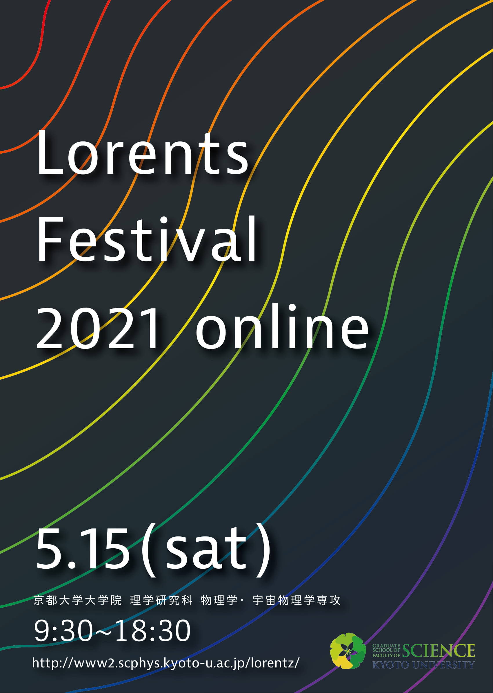

| ローレンツ祭とは | 参加方法 | プログラム | パンフレット |
| 時刻 | 内容 | 講師 | zoom ID |
|---|---|---|---|
| 9:30-9:55 | 専攻長あいさつ | 佐々真一 | 889 3507 1939 |
| 10:00-10:30 | 特別講義1「レーザー冷却と量子縮退原子:量子シミュレーター・量子計算への応用」 | 物1: 高須 洋介 | |
| 10:30-11:00 | 特別講義2「極限宇宙を探る~ガンマ線天文学最前線~」 | 物2: 窪 秀利 | |
| 11:00-11:30 | 特別講義3「太陽が我々にもたらすもの:恵み?or脅威?」 | 宇物: 野上 大作 | |
| 11:30-12:00 | 意見交換会 「学部教育に物申す!?」 | ||
| 13:00-18:30 | 研究室紹介番組 | 番組表を参照 |
| 13:00-13:30 | E1-低温物理学 | E2-ナノ構造光物性(化研) | E3-ソフトマター物理学 | T2-物性基礎論：量子情報(基研) |
| 13:30-14:00 | E1-固体量子物性 | E2-量子光学・レーザー分光学 | E3-時空間・生命物理学 | T2-物性基礎論：統計物理学(基研) |
| 14:00-14:30 | E1-量子凝縮物性 | E2-光物性 | T1-物性基礎論：凝縮系物理(基研) | T2-相転移動力学 |
| 14:30-14:45 | ||||
| 14:45-15:15 | プラズマ物性物理学 | E3-生体分子構造(複合研) | T1-凝縮系理論 | T2-非線形動力学 |
| 15:15-15:45 | E2-ナノ構造光物性(化研) | T2-流体物理学 | ||
| 15:45-16:15 | E2-量子光学・レーザー分光学 | E3-ソフトマター物理学 | T1-物性基礎論：凝縮系物理(基研) | |
| 16:15-16:30 | ||||
| 16:30-17:00 | ||||
| 17:00-17:30 | ||||
| 17:30-18:00 | ||||
| 物理学第二教室 | 宇宙物理学教室 | ||
| 1ch | 2ch | ||
| 13:00-13:30 | 素粒子論 | 原子核・ハドロン研究室 | 銀河 |
| 13:30-14:00 | 原子核理論(基研・物2合同) | 素粒子物理学(高エネ) | |
| 14:00-14:30 | 天体核物理学 | 宇宙線物理学 | 恒星 |
| 14:30-14:45 | |||
| 14:45-15:15 | 素粒子論(基研) | 核放射物理学(複合研) | 恒星 |
| 15:15-15:45 | 原子核理論(基研・物2合同) | 核ビーム物性学(複合研) | 太陽 [質問受付サイト] |
| 15:45-16:15 | 天体核物理学(基研) | ビーム物理学(化研) | |
| 16:15-16:30 | |||
| 16:30-17:00 | 素粒子論 | 宇宙線物理学 | 理論 |
| 17:00-17:30 | 原子核理論(基研・物2合同) | 原子核・ハドロン物理学 | |
| 17:30-18:00 | 天体核物理学 | 素粒子物理学(高エネ) | 予備 |
| 18:00-18:30 | 素粒子論(基研) | ||
| 研究室名 | 内容 | ch・時間 |
| 固体量子物性 | スタッフおよび学生によるスライドを用いた研究紹介 | 1ch・13:30-14:00 |
| 量子凝縮物性 | 教員による研究室全体の紹介(5分)、WEBカメラで実際の装置を見せながら、
各研究グループの院生による研究内容の紹介(20分)を行ったのち、 質疑応答(5分)を 行う予定です。 |
1ch・14:00-14:30 |
| 低温物理学 | 研究室紹介 | 1ch・13:00-13:30 |
| 量子光学・レーザー分光学 | 前半20分:PowerPointを用いた研究室紹介 後半10分:Virtual Lab Tour |
2ch・13:30-14:00 |
| 光物性 | 1.所属メンバーの研究内容紹介 2.コアタイム・ゼミなどの日常の様子紹介 3.その他、質問に回答 |
2ch・14:00-14:30 |
| ナノ構造光物性(化研) | スライドでの研究紹介
学生などによる質問への回答など |
2ch・15:15-15:45 |
| 時空間秩序・生命物理学 | Powerpoint等で研究内容を紹介します。簡単な実験やラボツアーの要素もあります。
残りの時間で質問を受け付けます。 |
3ch・13:30-14:00 |
| ソフトマター物理学 | 司会 高西 准教授
4~5 分 山本 教授の話 20 分ほど 実験のムービー (コレステリック、強誘電) 残り時間で質疑応答 |
3ch・13:00-13:30 |
| 生体分子構造(複合研) | パワーポイントによる研究室紹介を行います。
なお、生体分子構造(複合研)は2つの研究グループから成りますので、 30分を半分に分けて、それぞれのグループが15分ずつ紹介を行う予定です。 |
2ch・14:45-15:15 |
| 凝縮系理論 | ・柳瀬教授によるスライドを用いた研究紹介(20~30 min) ・学生による研究室紹介・質疑応答(40~30 min) |
3ch・14:45-15:45 |
| 物性基礎論:凝縮系物理(基礎研) | ・スタッフによるスライドを用いた研究室紹介 ・質疑応答 |
4ch・15:45-16:15 |
| 非線形動力学 | 事前にgoogle formで募集した質問に30分のコアタイムを用いて答えます。
コアタイム以外の時間に教員、博士課程の学生の研究内容を発表します。 |
4ch・14:45-15:15 |
| 流体物理学 | シミュレーションデモ等と研究紹介 | 4ch・15:15-15:45 |
| 相転移動力学 | 学生によるスライドを用いた研究紹介、質疑応答 | 4ch・14:00-14:30 |
| 物性基礎論:統計動力学(基礎研) | 研究室での現在進行中の研究テーマの紹介のみならず、
過去のメンバーの研究テーマや就職先等を紹介する予定です。 |
4ch・13:30-14:00 |
| 物性基礎論:量子情報 (基礎研) | 未定 | 4ch・13:00-13:30 |
| プラズマ物性物理学 | マイクロ波球状トカマクプラズマ装置の紹介と研究室案内 | 1ch・14:45-15:15 |
| 研究室名 | 内容 | ch・時間 |
| 原子核・ハドロン物理学 | ・研究室全体の説明 メンバー、研究内容、院生生活など
・各グループの説明 スライドによる研究内容の説明 各実験施設とzoomで接続、オンラインで見学 |
2ch・13:00-13:30 17:00-17:30 |
| 素粒子物理学 | ZOOM上でのスライドを用いた研究室紹介 | 2ch・13:30-14:00 17:30-18:00 |
| 宇宙線物理学 | 各グループの研究内容紹介 | 2ch・14:00-14:30 16:30-17:00 |
| 核放射物理学(複合研) | 1.研究室メンバーの紹介 2.研究内容の紹介 3.映像を使った研究室の案内 4.その他質疑応答 |
2ch・14:45-15:15 |
| 核ビーム物性学(複合研) | 教員と院生による研究室紹介 | 2ch・15:15-15:45 |
| 素粒子論:物理学第二教室・ 素粒子論研究室 | スライドを用いて素粒子論研究室の紹介を行い、
その後は参加者の質問にお答えする時間を設ける予定です。 |
1ch・13:00-13:30 16:30-17:00 |
| 素粒子論:基礎研物理学研究所・ 素粒子論グループ | ・学生による研究室紹介
・教員による研究紹介 |
1ch・14:45-15:15 18:00-18:30 |
| 原子核論:物理学第二教室・ 原子核理論研究室 | はじめにスライドで研究紹介を行い、その後は自由時間とし、
参加者からの質問に答えます。進路や院試の相談など何でも歓迎です。 |
1ch・13:30-14:00 15:15-15:45 17:00-17:30 |
| 原子核論:基礎物理学研究所・ 原子核理論グループ | ||
| 天体核物理学:物理学第二教室・ 天体核物理学研究室 | 院生による研究室紹介 | 1ch 14:00-14:30 17:30-18:00 |
| 天体核物理学:基礎物理学研究所・ 宇宙グループ | 1ch 15:45-16:15 | |
| ビーム物理学(化研) | ・研究室全体の紹介 ・大学院生の研究活動紹介 ・Q&A |
2ch 15:45-16:15 |
| 研究室名 | 内容 | ch・時間 |
| 太陽物理学 | 浅井 歩准教授によるzoom講演(30分)、質疑応答および院生との懇談(30分) | 15:15-16:15 |
| 太陽・宇宙プラズマ物理学 | 野上准教授による研究室紹介(30分)、残り30分院生による質疑応答。 なお、新教授が5/7までに着任した場合は、新教授が研究室紹介を行う。 | |
| 恒星物理学 | 発表内の時間構成:可視グループ 30分、X線グループ 30分 発表形式:スライドをもちいたzoom 講演 | 14:00-14:30 14:45-15:15 |
| 銀河物理学 | 太田耕司教授によるzoom講演(30分)、質疑応答(30分) | 13:00-14:00 |
| 理論宇宙物理学 | ハーマン・リー講師によるzoom講演(30分) 引き続きzoom上で前田准教授による分野の紹介と院生込みでの質疑応答(30分) | 16:30-17:30 |
